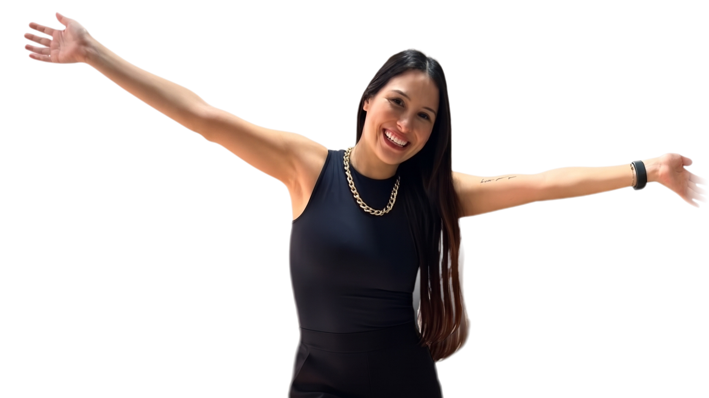

Dra. Isabelle Cintra
Fundadora e sócia
Cuida do planejamento do sorriso, com foco em lentes, reabilitação e resultados naturais, que valorizam a beleza que você já tem.
Falar com a Dra. Isabelle
Cintra Odontologia & Estética, na Vila Curuçá
Lentes, estética facial e implantes, com planejamento individual feito pelas sócias Isabelle e Karen Cintra.
Agendar minha avaliaçãoLentes, estética facial e implantes com planejamento individual.
Cuidado próximo, resultado com a sua cara.
Na primeira avaliação você conta o que incomoda, a Dra. examina e explica as opções indicadas para o seu caso. A decisão é sua, sem pressa.
Dentes manchados, com espaços, lascados ou de formato irregular.
A resina é aplicada diretamente sobre os dentes, no consultório, com planejamento da cor e da forma.
Quem quer mudar cor, formato e alinhamento com um acabamento sob medida.
Lâminas finas feitas em laboratório a partir do seu planejamento. A indicação depende da avaliação.
Sorriso em que a gengiva aparece demais ou tem contorno desigual.
Ajuste do contorno da gengiva para deixar o sorriso mais proporcional, muitas vezes junto com as lentes.
Dentes amarelados ou escurecidos pelo tempo, café, vinho ou cigarro.
Clareamento com acompanhamento profissional, depois de avaliar a saúde dos dentes e da gengiva.
Quem quer suavizar linhas de expressão ou dar mais definição aos lábios.
Toxina botulínica e preenchimento labial, com a Dra. Karen Cintra, respeitando as características do seu rosto.
Falta de um ou mais dentes, ou coroas antigas que precisam ser trocadas.
Reposição com implantes e coroas, cuidando da mordida e da aparência do sorriso.
Isabelle e Karen Cintra são irmãs e sócias, apaixonadas por transformação e pela renovação da autoestima de cada paciente. Juntas, seguem um princípio: ouvir o que você quer, avaliar com calma e indicar apenas o que faz sentido para o seu caso.
Fundadora e sócia
Cuida do planejamento do sorriso, com foco em lentes, reabilitação e resultados naturais, que valorizam a beleza que você já tem.
Falar com a Dra. Isabelle
Sócia
Atua na estética facial, com toxina botulínica e preenchimentos feitos com delicadeza e respeito às suas características.
Falar com a Dra. KarenVocê sabe o que vai acontecer antes de sentar na cadeira.
Conta o que gostaria de mudar e combina o melhor dia e horário com a equipe.
Avaliamos seus dentes, sua gengiva e sua saúde bucal, e ouvimos o que incomoda você no seu sorriso.
Apresentamos as opções indicadas para o seu caso, com as etapas de cada uma. Você decide no seu tempo.
Fazemos o procedimento combinado e orientamos os cuidados para manter o resultado.
A lente em resina é feita diretamente nos dentes, no consultório, e em geral exige menos desgaste. A de porcelana é produzida em laboratório e costuma resistir melhor a manchas. A escolha depende da avaliação, dos seus hábitos e do resultado que você deseja.
Depende do procedimento. Antes de começar, explicamos o que você vai sentir e usamos anestesia quando ela é indicada. Se tiver receio, conte na avaliação.
O valor depende do seu caso e do tratamento indicado. Apresentamos o orçamento depois da avaliação, para você decidir com todas as informações.
Conversamos sobre o que você deseja, examinamos seus dentes e sua saúde bucal e explicamos as opções indicadas, com calma e sem pressa para decidir.
Pelo WhatsApp. Toque em qualquer botão de agendamento desta página para falar com a equipe e combinar o dia e o horário.
Na Vila Curuçá, zona leste de São Paulo. Enviamos o endereço completo quando você confirma a avaliação.

Fale com a equipe pelo WhatsApp e combine o melhor dia e horário com a Dra. Isabelle ou com a Dra. Karen.
Agendar minha avaliação Os resultados variam de acordo com cada paciente.